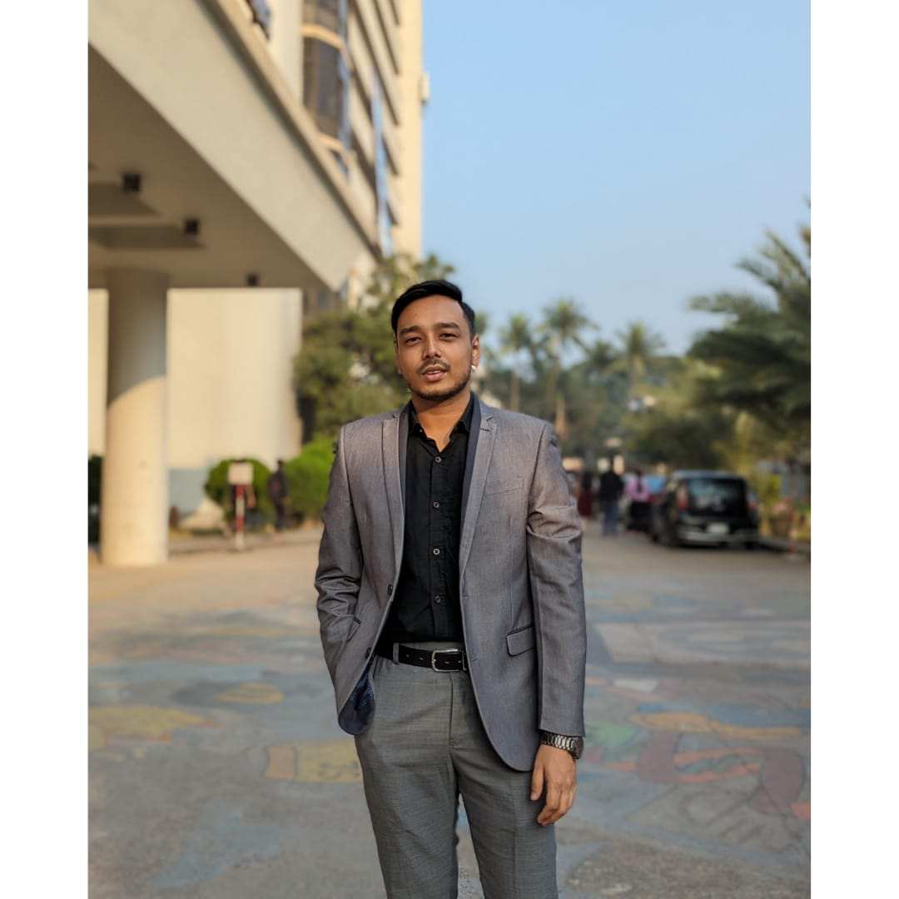
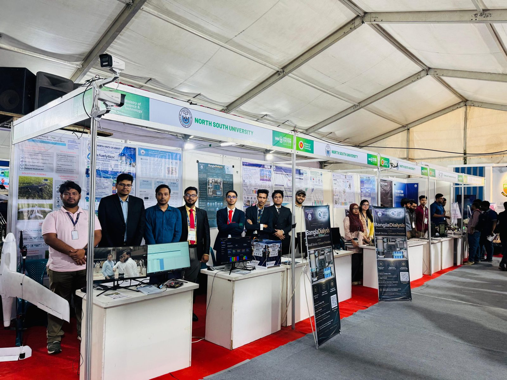
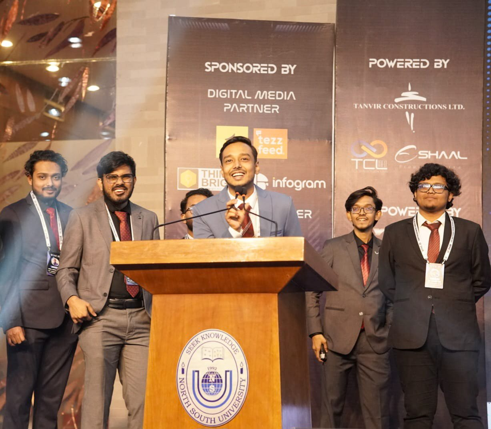
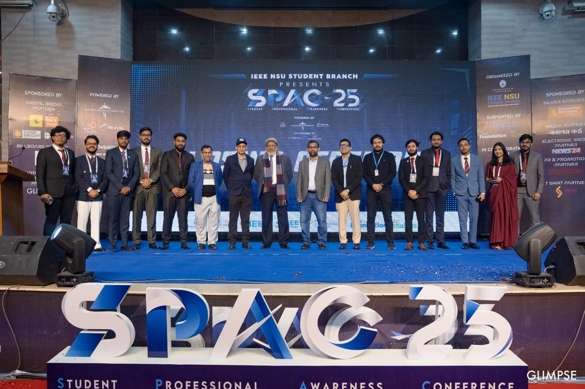

Md. Rakib Rayhan
Research Assistant · Microprocessor, Embedded Systems, and IoT Lab (MESIL)
BSc in Computer Science and Engineering · North South University
I design processors in RTL and verify them as working hardware on low-cost FPGAs. I have built MIPS, RISC-V and ARM cores, each from single-cycle to pipelined, and compared the microarchitectures of each on a single board.
About
I am a final-year undergraduate in Computer Science and Engineering (Department of Electrical and Computer Engineering) at North South University and a Research Assistant at the Microprocessor, Embedded Systems, and IoT Lab (MESIL). My work is in computer architecture and digital design: I write processors in RTL, implement them on FPGAs, and verify that the hardware behaves as the instruction set specifies.
My undergraduate thesis was the RTL design and hardware verification of a multi-cycle MIPS processor. Since then, I have built a pipelined MIPS processor; RISC-V cores, from a single-cycle RV32I design to multi-cycle and pipelined RV32IM; and ARM cores in single-cycle, multi-cycle and pipelined form. All of these cores share one low-cost Intel Cyclone IV board, where fitting each design into a small logic-element budget is the main engineering constraint. For each architecture, I compared how the single-cycle, multi-cycle and pipelined designs behave in hardware on that board.
For my higher study, I want to continue in computer architecture, RTL design & verification and FPGA systems, focusing on:
- How design choices such as pipelining trade area against performance on small hardware
- How ARM and RISC-V compare in real implementation cost
- Faster, more reliable RTL design and verification
My earlier machine learning work also gives me a secondary interest in hardware for machine learning. I would welcome a conversation with faculty working in these areas.
- Computer architecture
- RTL design & verification
- FPGA systems
- Electronic design automation
- Embedded systems
- Hardware for machine learning
- Education
- BSc in Computer Science and Engineering
Dept. of Electrical and Computer Engineering, North South University · 2022 – 2026 (expected) - Thesis
- RTL Design and Hardware Verification of a Multi-Cycle Processor on a Low-Cost FPGA Development Board · defended 2026
- Position
- Research Assistant, Microprocessor, Embedded Systems, and IoT Lab (MESIL)
Publications
Projects
Source code: github.com/mrakibrayhan
ARM microarchitecture comparison study
Comparison of single-cycle, multi-cycle and pipelined ARM cores, all implemented on the same low-cost FPGA board: the RZ-EasyFPGA A2.2 with an Intel Cyclone IV E (EP4CE6E22C8). Building every core on one small device makes the trade-offs between the microarchitectures directly comparable. Toward a journal paper.
RISC-V microarchitecture comparison study
Comparison of single-cycle, multi-cycle and pipelined RISC-V cores (RV32I and RV32IM), all implemented on the same low-cost FPGA board: the RZ-EasyFPGA A2.2 with an Intel Cyclone IV E (EP4CE6E22C8). Building every core on one small device makes the trade-offs between the microarchitectures directly comparable. Toward a journal paper.
MIPS microarchitecture comparison study
Comparison of single-cycle, multi-cycle and pipelined MIPS cores, all implemented on the same low-cost FPGA board: the RZ-EasyFPGA A2.2 with an Intel Cyclone IV E (EP4CE6E22C8). Building every core on one small device makes the trade-offs between the microarchitectures directly comparable. Toward a journal paper.
ARM pipelined processor
Pipelined ARM processor, completing the ARM series on the same Cyclone IV board used for the RISC-V study, so the ARM and RISC-V implementations can be compared on identical hardware.
ARM multi-cycle processor
Multi-cycle ARM processor implemented and verified on the same low-cost FPGA board as the other cores.
ARM single-cycle processor (ARMv4 subset)
Single-cycle ARM processor implementing an ARMv4 instruction subset, the first of the ARM cores, built on the same Cyclone IV board as the RISC-V study.
RISC-V pipelined CPU (RV32IM)
Pipelined processor implementing the RV32IM instruction set, including multiply and divide, on the RISC-V architecture, built on a low-cost FPGA development board alongside the single-cycle and multi-cycle cores.
RISC-V multi-cycle CPU (RV32IM)
Multi-cycle RISC-V core supporting the RV32IM instruction set, including multiply and divide, on a low-cost FPGA development board. The main challenge was fitting the full design within the board's very limited logic elements.
RISC-V single-cycle CPU (RV32I)
Single-cycle RISC-V core covering the RV32I base integer instruction set on FPGA, extending the processor work beyond MIPS.
Pipelined MIPS CPU
Extension of the multi-cycle design into a pipelined MIPS processor on a Cyclone IV FPGA board. Under consideration for a journal paper.
Multi-cycle MIPS CPU · undergraduate thesis
RTL design and hardware verification of a multi-cycle MIPS processor on FPGA. Presented at the National Innovation Fair 2026.
Single-cycle MIPS CPU
Single-cycle MIPS processor on a low-cost FPGA development board; the starting point for the multi-cycle and pipelined designs.
32-bit single-cycle MIPS processor with operating system · CSE332L
A 32-bit single-cycle processor on a custom MIPS-like instruction set, with separate instruction and data memories and support for arithmetic, logical, memory and control-flow instructions, including JAL and JR for subroutine calls. Includes a C++ assembler and a minimal operating system in MIPS assembly that computes the maximum, minimum and mean of ten integers using modular subroutines. Verified in ModelSim.
23-bit single-cycle MIPS CPU · CSE332
A single-cycle CPU designed in Logisim around a self-defined 23-bit MIPS-inspired instruction set, with the complete datapath, control unit and ALU control logic, plus a Python assembler that turns assembly programs into hex machine code for the instruction memory.
Knowledge distillation for fine-grained rice variety classification
Teacher–student framework for classifying 20 Bangladeshi rice varieties. A ResNet50 teacher reached 98.59% test accuracy; a lightweight custom CNN student reached 96.06% with 13.31× fewer parameters (23.55M → 1.77M) and 1.25 ms/image GPU latency. Grad-CAM confirmed attention on grain features rather than background.
Self-assessment of psychological distress from educational stress
Hybrid machine-learning approach for multi-class classification of anxiety, stress and depression levels in university students from survey data, comparing 15 algorithms with full preprocessing and hyperparameter tuning.
Custom memory allocator
malloc/free implementation in C built on Linux system calls, with an optimized block-reuse strategy and thread-safe concurrent access, benchmarked against an alternative reuse strategy and stress-tested under multi-threaded load.
SneakPick
Django e-commerce application with product catalog, user accounts, cart, order tracking, shipping options, checkout, promotions and reviews.
Football Club Management System
Full-stack web application for managing football club operations, with secure user authentication, management modules for clubs, managers, coaches, players, matches and stadiums, and an administrative dashboard.
Wedding Management System
Console-based Java application for planning and booking wedding packages (venue, food and decoration, with an optional photographer) across three regions of Bangladesh, with admin tools for managing employees and staff teams.
SUROKKHA: COVID-19 vaccine management system
Console-based C system, named after Bangladesh’s national vaccine registration initiative, for registering citizens, checking registration status and correcting details, with admin tools to view registrations and update vaccination records.
Banking simulator
Console-based mobile financial service simulator in C, with user login, money transfers, bill payments, transaction history, balance tracking and a reward-points system redeemable for cash.
Activities and milestones
- 2026
Bangladesh Innovation Fair 2026
Represented North South University as a Research Assistant at MESIL.

NSU stall, Bangladesh Innovation Fair 2026 - 2026
Undergraduate thesis defended
RTL design and hardware verification of a multi-cycle processor on FPGA.
- 2026
IEEE Region 10 Outstanding Student Branch Award
Received by the IEEE NSU Student Branch in 2026 for its events and activities, during my tenure as Vice Chair (Technical).
- 2026
Joined MESIL as a Research Assistant
Microprocessor, Embedded Systems, and IoT Lab (MESIL), Department of Electrical and Computer Engineering (ECE), School of Engineering & Physical Sciences (SEPS), North South University.
- 2025
Organizer, IEEE Student Transition and Elevation Partnership (STEP) 2025: Igniting Future Innovators
IEEE NSU Student Branch.
- 2025
Organizer, Student Professional Awareness Conference (SPAC-25)
IEEE NSU Student Branch. Organized as Vice Chair (Technical).

SPAC-25, IEEE NSU Student Branch - 2025
Organizer, Future Builders: AI-Driven Cognitive Innovation Hackathon
Held at North South University by the IEEE NSU Student Branch, organized as Vice Chair (Technical).

Organizing team and guests - 2023
BD Apps National Hackathon 2023
Selected for the regional round.
- 2022
Began BSc at North South University
Computer Science and Engineering, Dept. of Electrical and Computer Engineering.
Skills
- Hardware description
- Verilog, VHDL
- EDA tools
- Intel Quartus, ModelSim, Questa, Logisim
- Architectures
- MIPS, RISC-V (RV32I, RV32IM), ARM
- Programming
- C, C++, Python, Java, PHP, MIPS assembly
- Web
- HTML, CSS, MySQL, Django
- Machine learning
- CNNs, knowledge distillation, classical ML pipelines
Get in Touch
I am happy to discuss research fit, potential supervision and collaboration in computer architecture, RTL design and FPGA systems.